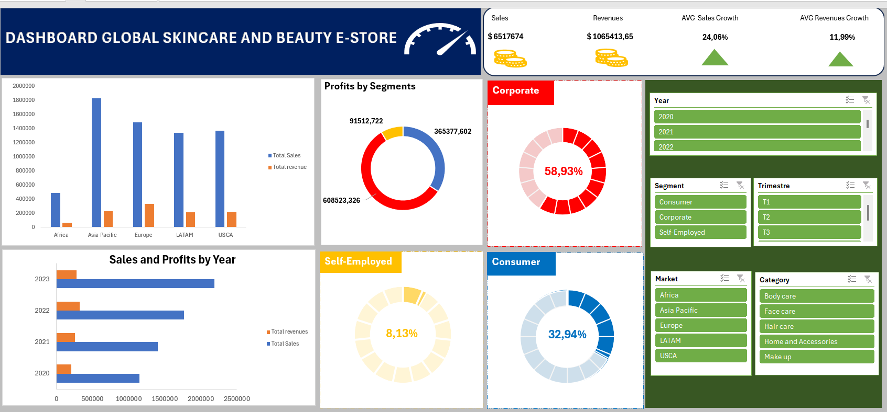

Projects

Global Skincare E-store Analysis
Analyse de +50 000 transactions e-commerce avec Excel, identification des produits les plus rentables et recommandations business.
Voir sur GitHub →
Analyse RH
Analyse des données RH pour comprendre le turnover, la performance et améliorer la gestion des employés.
Voir sur GitHub →